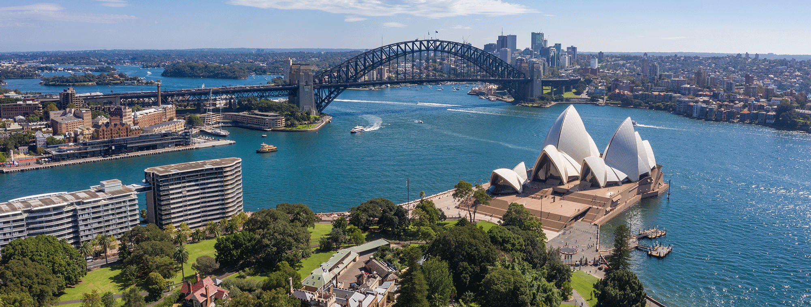
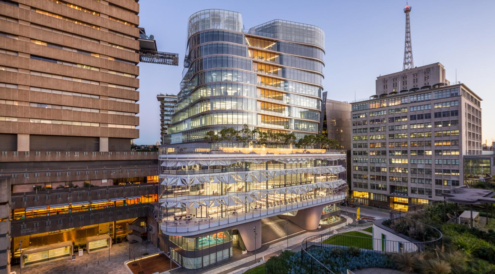
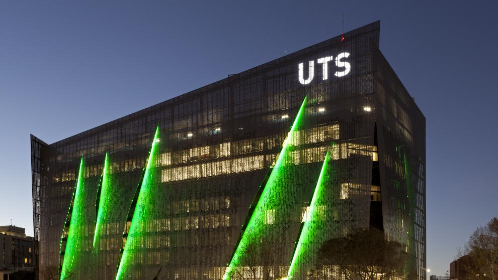

- Special Issue: Selected accepted papers are invited to a Special Issue in IJCIS (Springer Nature, SCI-indexed). View Flyer →
- Registration Open: Conference registration is now open. Register Now →
- Accommodation: Conference partner hotels and reservation links have been announced as updated. Click to see more →
- Deadline Extended: Full Paper Submission Deadline further extended to March 30, 2026. Click to see more →
- Deadline Extended: Full Paper Submission Deadline extended to March 15, 2026. Click to see more →
FLINS-ISKE 2026
The 17th FLINS Conference & the 21st ISKE Conference: Machine Learning and Knowledge Engineering for Decision Making
July 15-19, 2026 • Sydney, Australia
All accepted papers for FLINS-ISKE 2026 conference will be published as a proceeding by Springer Lecture Notes in Computer Science (LNCS), both EI and Scopus-indexed.




Welcome
FLINS, an acronym introduced in 1994 and originally for Fuzzy Logic and Intelligent Technologies in Nuclear Science, is now extended into a well-established international research forum to advance the foundations and applications of computational intelligence for applied research in general and for complex engineering and decision support systems. The principal mission of FLINS is bridging the gap between machine intelligence and real complex systems via joint research between universities and international research institutions, encouraging interdisciplinary research and bringing multidiscipline researchers together.
ISKE, the International Conference on Intelligent Systems and Knowledge Engineering, aims to provide a platform for technical and scientific professionals from academia, research and industries in the fields of intelligent systems and knowledge engineering to exchange knowledge and distribute the emerging state-of-the-art technologies.
The joint FLINS-ISKE 2026 conference will be held in Sydney, Australia. As one of the largest cities in the Southern Hemisphere, Sydney seamlessly blends its rich Indigenous heritage with modern innovation and iconic landmarks. From the historic Rocks district to its sun-kissed beaches, Sydney offers a captivating mix of tradition and contemporary vibrancy, making it an ideal venue for this prestigious event.
Selected accepted papers will be invited to submit an extended version to a Special Issue of the International Journal of Computational Intelligence Systems (IJCIS), a Springer Nature SCI-indexed journal.
All accepted papers for FLINS-ISKE 2026 conference will be published as a proceeding by Springer Lecture Notes in Computer Science (LNCS), both EI and Scopus-indexed. Selected papers will be invited for publication in SCI-indexed journals following a rigorous peer-review process.